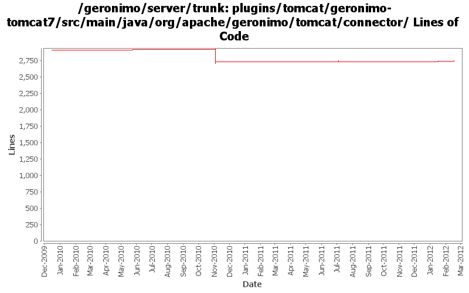

[root]/plugins/tomcat/geronimo-tomcat7/src/main/java/org/apache/geronimo/tomcat/connector

| Author | Changes | Lines of Code | Lines per Change |
|---|---|---|---|
| Totals | 49 (100.0%) | 263 (100.0%) | 5.3 |
| genspring | 19 (38.8%) | 161 (61.2%) | 8.4 |
| xiaming | 7 (14.3%) | 51 (19.4%) | 7.2 |
| xuhaihong | 18 (36.7%) | 50 (19.0%) | 2.7 |
| michaelfang | 1 (2.0%) | 1 (0.4%) | 1.0 |
| gawor | 4 (8.2%) | 0 (0.0%) | 0.0 |
GERONIMO-6274 Add @Persistent(manageable=false) annotation to some setter methods of connector parameters so that those parameters could be set via admin console, for trunk
7 lines of code changed in 2 files:
GERONIMO-6250 Add maxParameterCount to gbean attribute for easy configuaration from admin console to 3.0 trunk, patch provided by Yi Xiao
12 lines of code changed in 2 files:
GERONIMO-6041 Exception thrown when delete a connector via admin console
1 lines of code changed in 1 file:
Revert "GERONIMO-6027 https connector definition portlet patch from Shenghao Fang"
clientAuth=want is a legal value so that we can handle it as boolean. Please change the connector edit console behavior.
11 lines of code changed in 3 files:
GERONIMO-6027 https connector definition portlet patch from Shenghao Fang
32 lines of code changed in 3 files:
No need to stop the connector if it is managed by server and current GBean is just a wrapped
17 lines of code changed in 1 file:
GERONIMO-5643 fail to edit NIOHTTPConnector directly through console, added hot connector port edit support.
36 lines of code changed in 1 file:
Isolate the https protocol and move the ssl implemenations down to https connector gbeans.
104 lines of code changed in 13 files:
GERONIMO-5608 update connector attribute list, add the new common attribute to commonProtocol interface to avoid a exception when editing connector.
10 lines of code changed in 2 files:
a. Use Boolean/Integer.valueOf
b. Use Map.Entry as iterator item
c. Make sure all the stream objects are closed
27 lines of code changed in 10 files:
clientAuth option for Tomcat connectors supports three settings: true, false, and want. Probably should be an enum
0 lines of code changed in 4 files:
GERONIMO-5337 ServerHostName does not control the bind ip address for Tomcat Connectors
6 lines of code changed in 1 file:
Update Tomcat integration codes according to latest Tomcat 7 changes
0 lines of code changed in 4 files:
Support a new protocol handler in Tomcat 7
0 lines of code changed in 2 files: